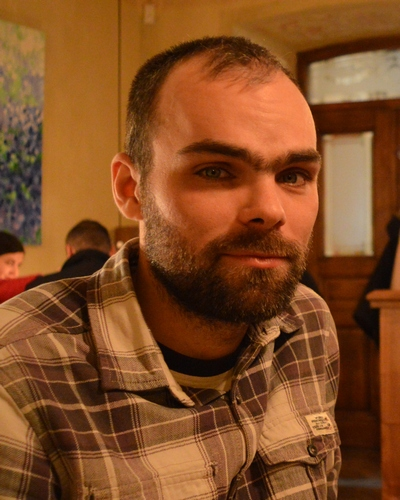

2015 - ..: FF.ua Web-разработчик
2011 - 2013: АО Киевстар
Инженер по обслуживанию сети FTTB
2008 - 2011: ИПФ Ривас
Линейній инженер
2016 - 2017:
Codaline
Frontend (HTML/CSS/JavaScript)
Сертификат № codaline17c011
2014: РЦНИТ
2004 - 2009:
Украинская государственная академия железнодорожного транспорта.
Спеуиальность: автоматика и автоматизация на транспорте
2002 - 2004: Лицей на базе Украинская государственная академия железнодорожного транспорта.
1994 - 2002: Средняя общеобразовательная школа № 30